Witte Software® https://www.modbustools.com
2020-05-04
1. Modbus Poll
Modbus Poll is an easy to use Modbus master simulator developed for many purposes. Among others:
-
Designers of Modbus slave devices for quick and easy testing of protocol interface
-
Automation engineers that need to test Modbus devices or networks on site
-
Service engineers that want to read out and/or change specific service data from a device
-
Change Modbus registers in a slave device
-
Log data from Modbus devices
-
Troubleshooting and compliance testing
1.1. System requirements for Modbus Poll
- Hardware requirements
-
Processor; 1 GHz or faster recommended
1 GB RAM
5 MB of available hard drive space
1024 x 768 display resolution - OS requirements
-
All Windows versions from Windows 7 to Windows 10 are supported.
Modbus Poll version 7 runs on Windows XP.
1.2. End User License Agreement
You should carefully read the following terms and conditions before using Modbus Poll. Unless you have a different license agreement signed by Witte Software, your use of this software indicates your acceptance of this license agreement and warranty. If you do not accept these terms you must cease using this software immediately.
Copyright.
Modbus Poll ("The Software") is copyright 2002-2020 by Witte Software, all rights reserved.
Evaluation and Registration.
This is not free software. You are hereby licensed to use the Software for evaluation purposes without
charge for a period of 30 days.
If you use the Software after the 30 day evaluation period a registration fee is required.
Unregistered use of the Software after the 30-day evaluation period is in violation of U.S. and international copyright laws.
One registered copy of the Software may either be used by a single person who uses the software personally on one or more computers, or installed on a single computer used by multiple people, but not both.
For information on order and pricing, please visit https://www.modbustools.com/order.html
Modbus Poll licenses are perpetual. Once you buy a license to a specific major version, and as long as you abide by the license agreement, you can use that version forever with no additional cost.
Distribution.
Provided that you do not include your License Key you are hereby licensed to make copies of the Software;
give exact copies of the original to anyone; and distribute the Software in its unmodified form via
electronic means. You are specifically prohibited from charging for any such copies.
LIMITED WARRANTY.
THE SOFTWARE IS PROVIDED AS IS AND WITTE SOFTWARE DISCLAIMS ALL WARRANTIES
RELATING TO THIS SOFTWARE, WHETHER EXPRESSED OR IMPLIED, INCLUDING BUT NOT LIMITED TO ANY IMPLIED
WARRANTIES OF MERCHANTABILITY AND FITNESS FOR A PARTICULAR PURPOSE.
LIMITATION ON DAMAGES.
NEITHER WITTE SOFTWARE NOR ANYONE INVOLVED IN THE CREATION, PRODUCTION, OR DELIVERY OF THIS SOFTWARE SHALL
BE LIABLE FOR ANY INDIRECT, CONSEQUENTIAL, OR INCIDENTAL DAMAGES ARISING OUT OF THE USE OR INABILITY
TO USE SUCH SOFTWARE EVEN IF WITTE SOFTWARE HAS BEEN ADVISED OF THE POSSIBILITY OF SUCH DAMAGES OR
CLAIMS. IN NO EVENT SHALL WITTE SOFTWARE’S LIABILITY FOR ANY DAMAGES EXCEED THE PRICE PAID FOR THE
LICENSE TO USE THE SOFTWARE, REGARDLESS OF THE FORM OF CLAIM. THE PERSON USING THE SOFTWARE BEARS
ALL RISK AS TO THE QUALITY AND PERFORMANCE OF THE SOFTWARE.
2. Modbus Poll Features
2.1. Connections
Modbus Poll read/write data from devices using:
-
Modbus RTU or ASCII on RS232 or RS485 networks. (USB/RS232/485 Converter)
-
Modbus TCP/IP
-
Modbus Over TCP/IP. (Modbus RTU/ASCII encapsulated in a TCP packet)
-
Modbus UDP/IP
-
Modbus over UDP/IP. (Modbus RTU/ASCII encapsulated in a UDP packet)
2.2. Supported Modbus Functions
-
01: Read coils
-
02: Read discrete inputs
-
03: Read holding registers
-
04: Read input registers
-
05: Write single coil
-
06: Write single register
-
15: Write multiple coils
-
16: Write multiple registers
-
17: Report slave ID
-
22: Mask write register
-
23: Read/Write registers
2.3. Data logging
-
Log data to a text file
-
Log data direct into Excel
2.4. Display formats
Each cell can be individual formatted.
-
Signed 16 bit register
-
Unsigned 16 bit register
-
Hex
-
Binary
-
32 bit signed integer with any word/byte order
-
32 bit unsigned integer with any word/byte order
-
64 bit signed integer with any word/byte order
-
64 bit unsigned integer with any word/byte order
-
32 bit float with any word/byte order
-
64 bit double float with any word/byte order
2.5. Miscellaneous features
-
OLE/Automation for interfacing with Excel VB etc.
-
Monitoring of data traffic
-
Print and print preview
-
Font selection
-
Conditional colors
-
Scaling
-
Real time charting
3. Overview
Modbus Poll uses a multiple document interface. That means several windows can be opened. Each one with different data contents from different slave devices at the same time.
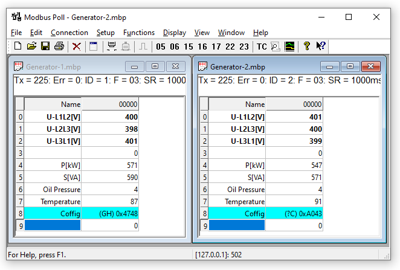
This picture shows two open windows. One reading 10 Holding registers from slave id 1 and another reading 10 Holding registers from slave id 2.
3.1. Help from anywhere
Press F1 and get context sensitive help on a topic associated with the current selected item.
SHIFT + F1 invokes a special "help mode" in which the courser turns into a help courser (arrow + question mark). The user can then select a visible object in the user interface, such as a menu item, toolbar button, or window. This opens help on a topic that describes the selected item.
3.2. Name cells
Here you can type any text for designation of the value cells. You can also copy/paste text from Excel cells.
3.3. Value cells
Show the data values of the Modbus registers. If you double click a value cell a dialog box lets you write a new value to the slave device. Typing a number in a value cell shows the dialog as well. It is possible to select the used Modbus function used to write the value.
The check box "Close dialog on Response ok" is used to automatically close the dialog box when a value is successfully sent. This is convenient when a lot of values are to be changed. In that way it is fast to select a new cell and then type a new value again.
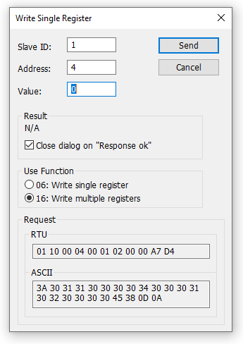
3.4. Change font
- To change the font you have 2 options
-
-
Select the cells to be changed and then right click.
-
Select the cells to be changed and then menu → display → font.
-
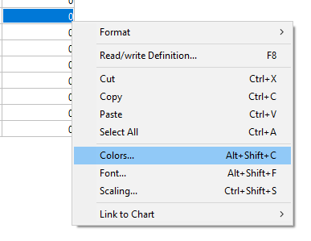
3.5. Conditional colors
Conditional colors help you visually show values in specific ranges.
- 3 color options
-
-
Default color: This color is used if none of the conditional colors evaluates to true.
-
Rule 1: This color selection is used if the expression evaluates to true.
-
Rule 2: This color selection is used if the expression evaluates to true. Rule 2 has precedence over rule 1.
-
- 7 Comparison operators
-
-
not used
-
equal to
-
greater than
-
less than
-
greater than or equal to
-
less than or equal to
-
and
-
The "and" operator cannot be used when the data type is of float or 32 bit long type. The condition value is entered as a hex number if "and" is selected. It evaluates to true if any of the bit in both the cell and the condition value is 1.
3.5.1. Color example
Green color if the cell value is between 398 and 402
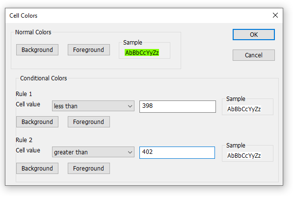
3.6. Scaling
Scaling help you scale raw values to human readable values. Scaling works only for signed and unsigned 16/32 bit integers.
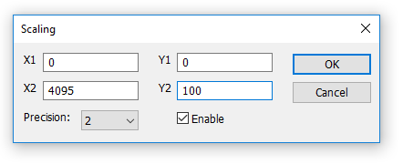
- (X1,Y1) and (X2,Y2)
-
A line passing through the two points (X1,Y1) and (X2,Y2)
\$Slope = m = (Y2 - Y1) / (X2 - X1)\$
- Line equation
-
\$Y = m * (X - X1) + Y1\$
- Precision
-
Number of digits after the decimal point.
- Enable
-
Must be enabled to scale the value from the Modbus server/slave. Scaling is automatically disabled if other than a 16/32 bit integer display format is selected.
3.7. Real time charting
The chart can plot 12 series in real time with up to 100000 points in each series.
3.8. Open a new window
To open another window you have 3 options:
-
Press CTRL+N
-
Select new in the file menu
-
Press on the tool bar
4. Connection dialog
To open the connection dialog you have 2 options:
-
Press F3
-
Select connect from the connection menu
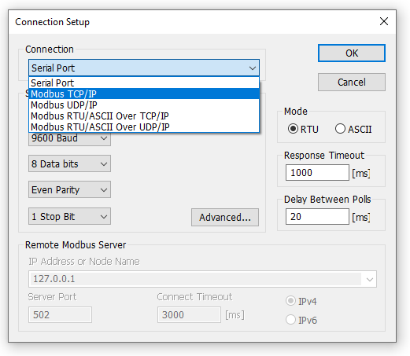
4.1. Connection
There are 5 different connection types:
-
Serial:
Modbus over serial line. RS232 or RS485. A USB serial converter can be used. -
Modbus TCP/IP:
Select TCP/IP if you want to communicate with a MODBUS TCP/IP network. In this case, slave ID is the same as the Unit ID used in MODBUS TCP/IP.
The port number is default 502.
If the connection fails then try if you can ping your device at the command prompt. If the ping command fails then Modbus Poll fails too. -
Modbus UDP/IP:
Select UDP/IP if you want to communicate with a MODBUS UDP/IP network. This is the same as Modbus TCP/IP but the connection less UDP protocol is used instead. -
Modbus RTU/ASCII over TCP/IP:
This is a RTU or ASCII message send over a TCP/IP network instead of serial lines. -
Modbus RTU/ASCII over UDP/IP:
This is a RTU or ASCII message send over a UDP/IP network instead of serial lines.
|
Connection type 3-5 is not standard Modbus as specified by www.modbus.org but they are added for convenience. |
Depending on your selection some other settings will be grayed.
4.2. Serial Settings
Use these parameters to set serial port settings. They are only available if connection type is "Serial Port".
4.3. Mode
Use this option to select RTU or ASCII mode. Default RTU.
4.4. Response timeout
Response timeout specifies the length of time that Modbus Poll should wait for a response from a slave device before giving up. Default is 1000ms.
4.5. Min delay between polls
This setting ensures a minimum delay until next request is transmitted no matter of the scan rate.
The resolution of this setting is approximately 15ms. It’s possible on some computers to obtain better resolution but not all.
|
4.6. Remote Server
Remote server settings are only available when use an Ethernet connection.
- IP Address
-
Servers IP address. Default is local host 127.0.0.1
- Port
-
Server port number. Default 502
- Connect Timeout
-
Max time to use to establish a connection. Default 1000
4.7. Advanced settings
- RTS Toggle
-
RTS Toggle specifies that the RTS line will be high if bytes are available for transmission. After all buffered bytes have been sent, the RTS line will be low.
You can use this to switch direction if you have a 232/485 converter without automatic direction switch.
| The use of RTS controlled RS232/RS485 converters should be avoided if possible. It is difficult to determine the exact time when to switch off the transmitter with non real-time operating systems like Windows and Linux. If it is switched off too early characters might still sit in the FIFO or the transmit register of the UART and these characters will be lost. Hence the slave will not recognize the message. On the other hand if it is switched off too late then the slave’s message is corrupted and the master will not recognize the message. |
- DSR
-
DSR specify whether the DSR (data-set-ready) signal is monitored for output flow control. If this member is TRUE and DSR is turned off, output is suspended until DSR is sent again.
- CTS
-
CTS specify whether the CTS (clear-to-send) signal is monitored for output flow control. If this checkbox is enabled and CTS is turned off, output is suspended until CTS is sent again.
- DTR
-
DTR specifies whether the DTR will be enabled or disabled whenever the port is opened.
- Remove Echo
-
If your device or RS232/RS485 converter echoes the chars just sent.
5. Read/Write definition
Use this command to define the data to be monitored for the active window.
To open the Read/Write Definition dialog you have 3 options:
-
Press F8
-
Select "Read/Write Definition" from the Setup menu
-
Press
 on the tool bar
on the tool bar
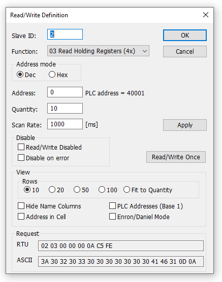
5.1. Slave ID
Range 1 to 255. (MODBUS protocol specifications say 247). The value 0 is also accepted to communicate directly to a MODBUS/TCP or MODBUS/UDPdevice.
5.2. Function code
You can select 1 of 8 function codes.
5.2.1. Read functions
The data returned by the read functions are displayed on the grid window.
-
01: Read coils (0x)
-
02: Read discrete inputs (1x)
-
03: Read holding registers (4x)
-
04: Read input registers (3x)
5.2.2. Write functions
The write functions write the data displayed on the grid window.
-
05: Write single coil (Writes to Coil status)
-
06: Write single register (Writes to Holding registers)
-
15: Write multiple coils (Writes to Coils)
-
16: Write multiple registers (Writes to Holding registers)
5.3. Address
Addresses in the Modbus protocol are confusing! Some protocol specifications use the protocol/message address and others use device addressing.
5.3.1. Protocol/message address
Some protocol specifications use the protocol/message address counting from 0 to 65535 along with a function code. This is also what the new Modbus specifications use. This is the address inside the message sent on the wire.
Modbus Poll use protocol/message address counting from 0 to 65535.
5.3.2. Device address
Some protocol specifications use device address/registers. Registers counts from 1. The first digit describes the function to be used. That means the device address 40101 is identified by address 100. The "4" means Holding registers and 4x registers counts from 1. And even more confusing: 4x means function code 03 and 3x means function code 04!
5.3.3. 5 digits vs. 6 digits addressing
The address format 4x counts from 40001 to 49999. The next address is not 50000. In old days 9999 addresses was enough. There are cases where 9999 is not enough. Then a zero is added. 40101 become 400101 and so on. This is called 6 digits addressing or extended addressing.
This is not a problem with Modbus Poll. 410001 become 10000. The "4" is thrown away and the rest 10001 is decremented by 1 as we count from 0 instead of 1.
5.4. Address examples
These examples show how to setup Modbus Poll if a specification use device addresses.
5.4.1. Read Holding Registers
You want to read 20 registers from device address 40011 from slave ID 2 every 1000ms. From the "4" we know this is function 03 "Read Holding Registers".
-
Slave ID = 2
-
Function = "03 Read Holding Registers (4x)"
-
Address = 10 (11 minus 1)
-
Quantity = 20
-
Scan rate = 1000
5.4.2. Read Discrete Inputs
You want to read 1000 coils from address 110201 from slave ID 5 every 500ms. From the "1" we know this is function 02 "Read Discrete Inputs"
-
Slave ID = 5
-
Function = "02 Read Discrete Inputs (1x)"
-
Address = 10200 (10201 - 1)
-
Quantity = 1000
-
Scan rate = 500
5.5. Scan rate
The scan rate can be set from 0 to 3600000ms. Note that setting the scan rate lower than the transaction time does not make sense. If a serial connection at 9600baud is used and 125 registers are requested the transaction time is roughly 8 + 2 + 250 + 2 = 262ms + the gap (>3.5 char time) between the request and the response. In this case setting the scan rate at e.g. 100ms do not make sense as the transaction time is at least 262ms + delay in the slave (gap) + min time between polls. (Set in the connection dialog F3).
5.6. Read/Write Disabled
The "Read/Write Disabled" check box can be used to temporary enable or disable the communication for this window. A text (Disabled) is then shown along with the Tx and Error counters.
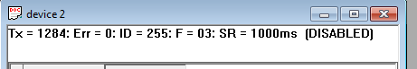
If "Read/Write" is disabled you can make single requests with the "Read/Write once" button or press F6.
"Read/Write once" button
5.6.1. Disable on error
Disable Read/Write in case of error.
5.7. Hide name columns
Hide all name columns. This is convenient to make more space if they are not used.
5.8. Address in cell
If enabled, the address is also shown in the value cell like: 2000 = 00000
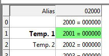
5.9. PLC Addresses (Base 1)
This option will show the addresses as device address.
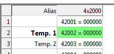
5.10. Enron/Daniel Mode
Enron or Enron/Daniels Modbus is Standard Modbus with a few "Vendor Extensions". The exact impact of these extensions is context dependent, but most common Modbus commands works as expected. There are some custom vendor-defined functions available - but few users expect or use them. The largest impact has to do with how 32-bit data values are read/written.
Enron-Modbus defines two special 4x holding register ranges:
-
4x5001 to 4x5999 are assumed 32-bit long integers (4-bytes per register).
-
4x7001 to 4x7999 are assumed 32-bit floating points (4-bytes per register).
Dealing with 32-bit values in Modbus is NOT unique to Enron-MB. However, Enron-MB takes the debatable step of returning 4-bytes per register instead of the 2-bytes implied by the term "holding register" in the Modbus specification. This means a poll of registers 4x5001 and 4x5002 in Enron-Modbus returns 8-bytes or two 32-bit integers, whereas Standard Modbus would only return 4-bytes or one 32-bit integer treated as two 16-bit integers. In addition, polling register 4x5010 in Enron-MB returns the tenth 32-bit long integer, whereas Standard Modbus would consider this 1/2 of the fifth 32-bit long integer in this range.
5.11. Rows
Specify the number of rows in the grid you prefer.
6. Real time Charting
Use this command to plot up to 12 data series in a chart in real time.
The real time chart is high speed and capable to draw a new line as fast as new data is received.
| All chart settings are stored with workspace. Save/Open Workspace |
To open the Real time charting dialog you have 2 options:
-
Press Alt + R
-
Select "Real time Charting" from the Display menu
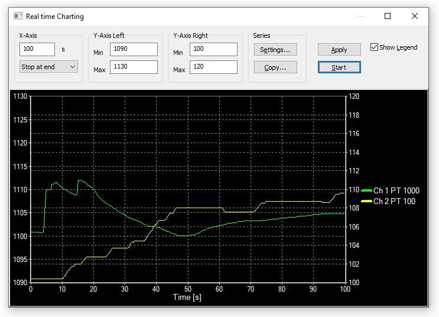
The X-Axis display the number of seconds since the chart was started.
When the points reach the end of the chart there are 3 options:
-
Stop at end: The charting stops.
-
Restart at end: The charting starts all over again.
-
Continue: It continue until it reach the max number of points or stop is pressed.
6.1. Settings
By default all 12 series are linked to the left Y-Axis. Check the "Right Y-Axis" check box if you want to link a series to the right Y-Axis.
- Specify
-
-
Colors
-
Right Y-Axis
-
Title
-
Offset
-
- Show
-
-
File name
-
Address
-
The offset is useful to align data points on the same Y-Axis. For example, data points that is either 0 or 1 can be offset so they are not drawn on top of each other.
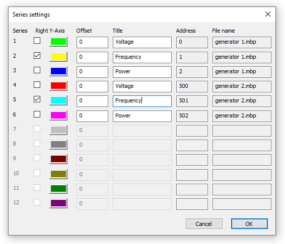
6.2. Zoom function
Zooming in on the chart can be useful if you want to see more details. The zoom is controlled with left mouse button. To zoom a specific part of the chart, simply left-click on the chart (this will be the upper-left corner of the zoomed rectangle) and drag to the bottom-right. A rectangle will appear. As soon as you release the mouse button, the axes will automatically adjust themselves to the region you have selected.
If you left-click on the chart (like for starting a zoom) but if you move to the top-left corner instead, all the modifications done with the zoom and pan features will be canceled (the chart will be in the state it was before the manipulations with the pan and zoom).
6.3. Pan function
To pan the control, right-click somewhere on the control and move the mouse. The point under the mouse will follow the movement of the mouse.
6.4. Link data to the chart series
The chart don’t know which data to use unless you link a Modbus data cell to one of the 12 series. To do so select a value cell and from Menu→Display select "Link to Chart".
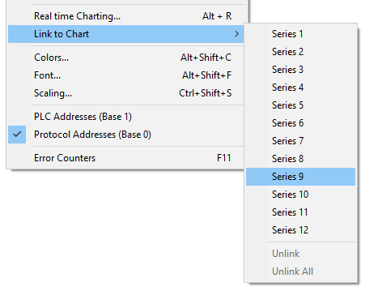
6.5. Copy series
Save series data to disk or copy to clipboard. Paste the data direct in Excel for further processing.
The file is given a .csv extension despite the use of a non-comma field separator.
Delimiters: Select the character that separates values in your text file. Use tab for Excel.
- Further more some additional information is given.
-
-
Number of points
-
Max point value
-
Min point value
-
Average point value
-

7. Display formats
Mark the cells to be formatted. Select one of the 28 display formats from the display menu.
7.1. Native Modbus registers
The 16 bit Modbus registers can be displayed in 4 different modes.
-
Signed
-
Unsigned
-
Hex
-
Binary
7.2. 32 bit signed integer
This combines 2 16 bit Modbus registers. It can be displayed in 4 different word/byte orders.
-
Signed integer Big-endian
-
Signed integer Little-endian
-
Signed integer Big-endian byte swap
-
Signed integer Little-endian byte swap
- Example
-
Byte Order: AB CD (Big-endian)
The decimal number 123456789 or in hexadecimal 07 5B CD 15
Order as they come over the wire in a Modbus message: 07 5B CD 15
7.3. 32 bit unsigned integer
This combines 2 16 bit Modbus registers. It can be displayed in 4 different word/byte orders.
-
Unsigned integer Big-endian
-
Unsigned integer Little-endian
-
Unsigned integer Big-endian byte swap
-
Unsigned integer Little-endian byte swap
- Example
-
Byte Order: AB CD (Big-endian)
The decimal number 123456789 or in hexadecimal 07 5B CD 15
Order as they come over the wire in a Modbus message: 07 5B CD 15
7.4. 64 bit signed integer
This combines 4 16 bit Modbus registers. It can be displayed in 4 different word/byte orders.
-
Signed integer Big-endian
-
Signed integer Little-endian
-
Signed integer Big-endian byte swap
-
Signed integer Little-endian byte swap
- Example
-
Byte Order: AB CD EF GH (Big-endian)
The decimal number -1,234,567,890,123,456,789 or in hexadecimal EE DD EF 0B 82 16 7E EB
Order as they come over the wire in a Modbus message: EE DD EF 0B 82 16 7E EB
7.5. 64 bit unsigned integer
This combines 4 16 bit Modbus registers. It can be displayed in 4 different word/byte orders.
-
Unsigned integer Big-endian
-
Unsigned integer Little-endian
-
Unsigned integer Big-endian byte swap
-
Unsigned integer Little-endian byte swap
- Example
-
Byte Order: AB CD EF GH (Big-endian)
The decimal number 1,234,567,890,123,456,789 or in hexadecimal 11 22 10 F4 7D E9 81 15
Order as they come over the wire in a Modbus message: 11 22 10 F4 7D E9 81 15
7.6. 32 bit floating
This combines 2 16 bit Modbus registers. It can be displayed in 4 different word/byte orders.
-
Float Big-endian
-
Float Little-endian
-
Float Big-endian byte swap
-
Float Little-endian byte swap
- Example
-
Byte Order: AB CD (Big-endian)
The floating point number 123456.00 or in hexadecimal 47 F1 20 00
Order as they come over the wire in a Modbus message: 47 F1 20 00
7.7. 64 bit double
This combines 4 16 bit Modbus registers. It can be displayed in 4 different word/byte orders.
-
Double Big-endian
-
Double Little-endian
-
Double Big-endian byte swap
-
Double Little-endian byte swap
- Example
-
Byte Order: AB CD EF GH (Big-endian)
The floating point number 123456789.00 or in hexadecimal 41 9D 6F 34 54 00 00 00
Order as they come over the wire in a Modbus message: 41 9D 6F 34 54 00 00 00
8. Save/Open Workspace
If you open many related Modbus windows it is convenient to save a snapshot of the current layout of all open and arranged Modbus Windows in one workspace.
A workspace (*mbw) is a file that contains display information and file names of all open windows. Not the actual contents. To do this, go to File→ Save Workspace.
When you open a workspace file, Modbus Poll opens all Modbus Windows and displays them in the layout that you saved.
9. Test center
The purpose of this test dialog is to help MODBUS slave device developers to test the device with any
string of their own composition.
The list box displays the transmitted data as well as the received data.
You can have several test strings in the pull down list box. When you have entered a string then press
the "Add to List" button then the string is added to the list.
The selected string is sent when the "Send" button is pressed.
- Open list
-
Rest test strings from a file.
- Save list
-
Store the test strings to a file.
- Clear
-
Clear the test list.
- Add to list
-
Add the current test string to the list.
- Add Check
-
Add a CRC or LRC to the end of the input string.
When using the test center you may want to disable communication from other windows. Check the "Read/Write disable" check box in "Read/Write Definition" dialog. Setup→Read/Write Definition.
9.1. ASCII Example
String in the combo box:
3A 30 31 30 33 30 30 30 30 30 30 30 41
The transmitted string if LRC is added
3A 30 31 30 33 30 30 30 30 30 30 30 41 46 32 0D 0A
A CR LF pair are also added.
9.2. TCP/IP Example
Read 10 holding registers.
00 00 00 00 00 06 01 03 00 00 00 0A
The first 6 bytes are the TCP/IP header.
9.3. Test center string file
With a text editor such as notepad or similar you can prepare strings to be used in the test.
The first line in the file must be the string "TestCenter". This is how Modbus Poll knows that the file is the correct format. Press "Open list" to open the prepared text file.
9.3.1. Content of a string list
TestCenter 3A 30 31 30 33 30 30 30 30 30 30 30 41 3A 30 32 30 33 30 30 30 30 30 30 30 41 3A 30 33 30 33 30 30 30 30 30 30 30 41
9.4. Copy
Use the Copy button to copy selected Tx/Rx strings to the clipboard.
The SHIFT and CTRL keys can be used together with the mouse to select and deselect strings, select groups of strings, and select non-adjacent strings.
| Leave this window open while doing other commands. |
10. Modbus Data logging
You can log data to either a text file or direct to Microsoft Excel.
10.1. Text file
Select Log from the setup menu or use short cut keys: Alt+L
Each Modbus Window logs to its individual text file.
When you want to stop the data logging then select the logging off command on the setup menu.
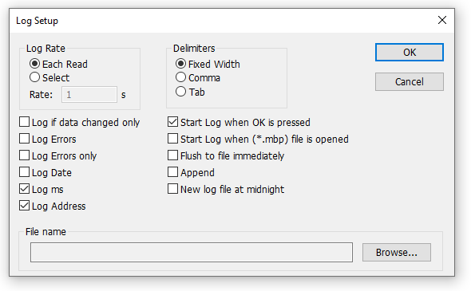
10.1.1. Log Rate
- Each read
-
Write a log line for all Modbus requests. Log frequency as scan rate.
- Select
-
Specify the log rate in seconds. Independent of scan rate.
If the scan rate is e.g. 10000ms it makes no sense to set a 1 sec log rate as data are logged only when new data are ready.
10.1.2. Delimiters
As delimiter you can use one of following options:
- Fixed width
-
Means that the values are organized in columns.
- Comma
-
Values separated by a comma.
- Tab
-
Values separated by a tab.
10.1.3. Log if data changed only
Specify that a new log line is written only if any data is changed since last log.
10.1.4. Log Errors
Specify that errors such a timeout etc. are logged.
10.1.5. Log Date
Specify that the current date is added to the log time.
10.1.6. Log ms
Specify that milliseconds are added to the log time.
10.1.7. Log address
Specify that the Modbus Address is added to the log.
10.1.8. Start Log when ok is pressed
Specify that logging is started when ok button is pressed. Otherwise the log setup is just stored when *mbp file is saved.
10.1.9. Start Log when *mbp is opened
Specify that logging is automatically started when a *.mbp file is opened.
10.1.10. Flush to file immediately
This ensures that log lines are not cashed in the file system but physical written immediately.
10.1.11. Append
Specify that logs are appended to selected file. Otherwise a new file is created.
10.1.12. New log file at midnight
Close the current log file and start a new file at midnight. A time stamp is added to your filename.
Example of a text file with fixed width:
22:28:13 <40001> 17395 0 0 0 0 0 0 0 0 22:28:14 <40001> 17396 1 0 0 0 0 0 0 0 22:28:15 <40001> 17394 1 0 0 2 55 0 0 0 22:28:16 <40001> 13350 1 0 0 4 0 0 0 0
You can import the data in an Excel spreadsheet.
10.2. Microsoft Excel
This feature requires that Microsoft Excel is installed. Excel 2003 log is limited to 65535 logs as this is the max number of rows in an Excel sheet. Excel 2007 or newer is limited to 1,048,576 rows. Each Modbus Window logs to its individual Excel sheet.
Select Excel Log from the setup menu or use short cut keys: Alt+X
Do not touch the Excel sheet while logging as this will interrupt the logging.
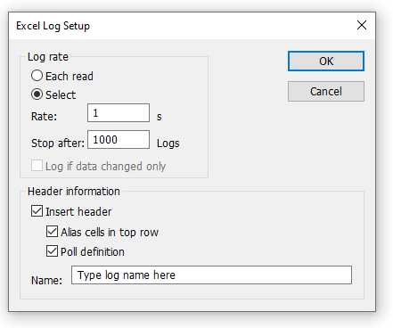
10.2.1. Log Rate
-
Each read: Write a log line for all Modbus requests. Log frequency as scan rate.
-
Select: Specify the log rate in seconds. Log is independent of scan rate.
Remark: If the scan rate is e.g. 10000ms it makes no sense to set a 1 sec log rate as data are logged only when new data are ready. -
Stop after: Specify the number of log lines. Note that Excel 2003 is limited to 65,536 rows and Excel 2007 1,048,576 rows.
10.2.2. Header information
-
Insert header: Information is inserted in the top most 3 lines in the Excel sheet.
-
Name cells in top row: Insert names in row 3.
-
Poll definition: Insert ID, Function etc. in row 2.
-
Name: Insert a log name in row 1.
-
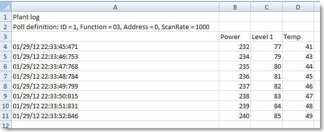
Excel log with header information.
11. Communication traffic
Select the menu Display→Communication to show the traffic on the serial line or Ethernet cable. Use the stop button to temporary stop the update for inspection.
Use the copy button to copy selected line to the clipboard.
| This window show only data sent and received by Modbus Poll. You cant use it as a data sniffer. |
| Leave this window open while doing other commands. |
12. OLE/Automation
Automation (formerly known as OLE Automation) makes it possible for one application to manipulate objects implemented in another application.
An Automation client is an application that can manipulate exposed objects belonging to another application. This is also called an Automation controller.
An Automation server is an application that exposes programmable objects to other applications. Modbus Poll is an automation server.
That means you can use any program that supports VBA (Visual Basic for Applications) such as Visual Basic, Excel etc. to interpret and show the modbus data according to your specific requirements.
12.1. Excel example
You should display the Developer tab or run in developer mode when you want to write macros.
12.1.1. Excel 2007
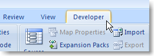
-
Click the Microsoft office button and then click Excel options.
-
Click popular and then select the show Developers tab in the ribbon check box.
Note the ribbon is part of the Microsoft fluent user interface.
12.1.2. Excel 2010
-
Click on the file tab.
-
Click options. Excel Options window will open.
-
On the left pane click Customize Ribbon.
-
On the right pane, under Main Tabs, check the Developer check box.
-
Click OK. The Developer tab should now show in the ribbon (right most tab).
12.1.3. Excel sample code
This example opens two windows. One reading registers and another reading Coils.
Modbus Poll is hidden but you can show it by uncomment the "ShowWindow" line. This will show one of the windows.
An example is also included with the Modbus Poll installation.
Start → All Programs → Modbus Poll → Excel Example
Public doc1 As Object
Public doc2 As Object
Public app As Object
Dim res As Integer
Dim n As Integer
Private Sub StartModbusPoll_Click()
Set app = CreateObject("Mbpoll.Application")
Set doc1 = CreateObject("Mbpoll.Document")
Set doc2 = CreateObject("Mbpoll.Document")
' Read 10 Holding Registers every 1000ms
res = doc1.ReadHoldingRegisters(1, 0, 10, 1000)
' Read 10 Coil Status every 1000ms
res = doc2.ReadCoils(1, 0, 10, 1000)
' doc1.ShowWindow()
app.Connection = 1 ' Modbus TCP/IP
app.IPAddress = "127.0.0.1" ' local host
app.ServerPort = 502
app.ConnectTimeout = 1000
res = app.OpenConnection()
End Sub
Private Sub Read_Click()
Cells(5, 7) = doc1.ReadResult() 'Show results for the requests
Cells(6, 7) = doc2.ReadResult()
For n = 0 To 9
Cells(5 + n, 2) = doc1.SRegisters(n)
Next n
For n = 0 To 9
Cells(18 + n, 2) = doc2.Coils(n)
Next n
End Sub12.2. Connection Functions/Properties
The following properties and functions do the same as you setup in the connection dialog (F3).
12.2.1. Connection
Connection selects the desired connection. A serial port or one of the Ethernet connections can be selected.
Property Connection as Integer
- Valid values
-
0 = Serial port
1 = Modbus TCP/IP
2 = Modbus UDP/IP
3 = Modbus ASCII/RTU over TCP/IP
4 = Modbus ASCII/RTU over UDP/IP
Connection = 012.2.2. BaudRate
Applicable only for Connection = 0
Property BaudRate as Long
- Valid values
-
300
600
1200
2400
4800
9600 (Default)
14400
19200
38400
56000
57600
115200
128000
256000
460800
921600
BaudRate = 960012.2.3. DataBits
Applicable only for Connection = 0
Property DataBits as Integer
- Valid values
-
7
8 (Default)
DataBits = 812.2.4. Parity
Applicable only for Connection = 0
Property Parity as Integer
- Valid values
-
0 = None
1 = Odd
2 = Even (Default)+
Parity = 212.2.5. StopBits
Applicable only for Connection = 0
Property StopBits as Integer
- Valid values
-
1 (Default)+ 2
StopBits = 112.2.6. SerialPort
Applicable only for Connection = 0
Property SerialPort as Integer
- Valid values
-
1255
Default value = 1
SerialPort = 112.2.7. ResponseTimeout
The ResponseTimeout specifies the length of time in ms that Modbus Poll should wait for a response from a slave device before giving up.
Property ResponseTimeout as Integer
- Valid values
-
50100000
Default value = 1000
ResponseTimeout = 100012.2.8. ServerPort
Applicable only for Connection = 14
Property ServerPort as Long
- Valid values
-
065535
Default value = 502
ServerPort = 50212.2.9. ConnectTimeout
The ConnectTimeout specifies the length of time that Modbus Poll should wait for a TCP/IP connection to succeed.
Applicable only for Connection = 14
Property ConnectTimeout as Integer
- Valid values
-
10030000ms
Default value = 1000ms
ConnectTimeout = 100012.2.10. IPVersion
Applicable only for Connection = 14
Property IPVersion as Integer
- Valid values
-
4 = IP Version 4 (Default)
6 = IP Version 6
IPVersion = 412.2.11. OpenConnection
Opens the connection selected with the Connection property.
Function OpenConnection() As Integer
Return Value:
For error 3-5: Please check if you have the latest serial port driver.
0 = SUCCESS
1 = Serial Port not available
3 = Serial port. Not possible to get current settings from port driver.
4 = Serial port. Serial port driver did not accept port settings.
5 = Serial port. Serial port driver did not accept timeout settings.
12 = TCP/UDP Connection failed. WSA start up
13 = TCP/UDP Connection failed. Connect error
14 = TCP/UDP Connection failed. Timeout
15 = TCP/UDP Connection failed. IOCTL
17 = TCP/UDP Connection failed. Socket error
21 = TCP/UDP Connection failed. Address information
Public app As Object
Dim res As Integer
' Create an object to Modbus Poll
Set app = CreateObject("Mbpoll.Application")
app.Connection = 1 ' Select Modbus TCP/IP
app.IPVersion = 4
app.IPAddress = "192.168.1.27"
app.ServerPort = 502
app.ConnectTimeout = 1000
app.ResponseTimeout = 1000
res = OpenConnection()Public app As Object
Dim status As Integer
' Create an object to Modbus Poll
Set app = CreateObject("Mbpoll.Application")
app.Connection = 0 ' Mode is serial port
app.SerialPort = 1 ' Com port 1
app.BaudRate = 9600 ' 9600 baud
app.Parity = 0 ' None parity
app.Mode = 0 ' RTU mode
app.ResponseTimeout = 1000 ' Wait 1000ms until give up
status = app.OpenConnection()12.2.12. CloseConnection
Function CloseConnection() As Integer
- Return Value
-
Zero if success. Nonzero value if failed.
12.3. Read Functions
The following functions do the same as you setup in the read/write definition dialog (F8).
Read functions are associated with a Modbus Poll document. (The window with data)
.Example
' First a Modbus Poll document is needed.
Public doc As Object
Set doc = CreateObject("Mbpoll.Document")
res = doc.ReadCoils(1, 0, 100, 1000) ' Read 100 coils every 1000ms| You must create a Read before you can use properties to get data. |
12.3.1. ReadCoils
Function ReadCoils(SlaveID As Integer, Address As Long, Quantity As Integer, ScanRate As Long) As Integer
- Return Value
-
True if success. False if not success
- Parameters
-
SlaveID: The slave address 1 to 255
Address: The data address (Base 0)
Quantity: The number of data. 1 to 2000
ScanRate: 0 to 3600000ms
12.3.2. ReadDiscreteInputs
Function ReadDiscreteInputs(SlaveID As Integer, Address As Long, Quantity As Integer, ScanRate As Long) As Integer
- Return Value
-
True if success. False if not success
- Parameters
-
SlaveID: The slave address 1 to 255
Address: The data address (Base 0)
Quantity: The number of data. 1 to 2000
ScanRate: 0 to 3600000ms
12.3.3. ReadHoldingRegisters
Function ReadHoldingRegisters(SlaveID As Integer, Address As Long, Quantity As Integer, ScanRate As Long) As Integer
- Return Value
-
True if success. False if not success
- Parameters
-
SlaveID: The slave address 1 to 255
Address: The data address (Base 0)
Quantity: The number of data. 1 to 125
ScanRate: 0 to 3600000ms
12.3.4. ReadInputRegisters
Function ReadInputRegisters(SlaveID As Integer, Address As Long, Quantity As Integer, ScanRate As Long) As Integer
- Return Value
-
True if success. False if not success
- Parameters
-
SlaveID: The slave address 1 to 255
Address: The data address (Base 0)
Quantity: The number of data. 1 to 125
ScanRate: 0 to 3600000ms
12.3.5. ShowWindow
ShowWindow()
As default Modbus document windows are hidden. The ShowWindow function makes Modbus Poll visible and show the document with data content.
12.3.6. ByteOrder
Property ByteOrder As Integer
- Description
-
Sets the byte order used by Longs, Floats and Doubles properties.
0 = Big-endian (Default)
1 = Little-endian byte swap
2 = Big-endian byte swap
3 = Little-endian
Example for Longs:
Byte Order: Big-endian
The decimal number 123456789 or in hexadecimal 07 5B CD 15
Order as they come over the wire in a Modbus message: 07 5B CD 15
- Syntax
-
ByteOrder [=newvalue]
12.3.7. ReadResult
Use this property to check if communication established with Read is running successful.
Property ReadResult As Integer
Return Value:
0 = SUCCESS
1 = TIMEOUT ERROR
2 = CRC ERROR
3 = RESPONSE ERROR (The response was not the expected slave id, function or address)
4 = WRITE ERROR
5 = READ ERROR
6 = PORT NOT OPEN ERROR
10 = DATA UNINITIALIZED
11 = INSUFFICIENT BYTES RECEIVED
16 = BYTE COUNT ERROR
19 = TRANSACTION ID ERROR
81h = ILLEGAL FUNCTION
82h = ILLEGAL DATA ADDRESS
83h = ILLEGAL DATA VALUE
84h = SERVER DEVICE FAILURE
85h = ACKNOWLEDGE
86h = SERVER DEVICE BUSY
87h = NAK-NEGATIVE ACKNOWLEDGMENT
8Ah = GATEWAY PATH UNAVAILABLE
8Bh = GATEWAY TARGET DEVICE FAILED TO RESPOND
12.3.8. WriteResult
Return a write result as an integer.
Use this function to check if a write was successful. The value is DATA_UNINITIALIZED until the result from the slave is available. See ReadResult for a list of possible values.
Property WriteResult As Integer
12.4. Automation data properties
The below properties are used to set or get values in the internal write/read arrays in Modbus Poll. The Index used is not a Modbus Address. The Index always counts from 0 no matter of the address used. The data properties are associated with a Modbus Poll document. (The window with data)
Example 1:
' doc is assumed created first. See Excel example.
doc.SRegisters(0) = 1
doc.SRegisters(1) = 10
doc.SRegisters(2) = 1234
' Write 3 registers stored in Modbus Poll internal array
' to Modbus address 100 (40101)
res = doc.WriteMultipleRegisters(1, 100, 3)Example 2 with floating point values:
doc.Floats(0) = 1.3
doc.Floats(2) = 10.5
doc.Floats(4) = 1234.12
res = doc. WriteMultipleRegisters(1, 0, 6) "Write the 6 register stored in Modbus Poll
' 6 Registers are written as float is 32 bit wide.12.4.1. Coils
Property Coils(Index As Integer) As Integer
- Description
-
Sets a coil in the write array structure or return a coil from the read array.
- Syntax
-
Coils(Index) [=newvalue]
12.4.2. SRegisters
Property SRegisters(Index As Integer) As Integer
- Description
-
Sets a register in the write array structure or return a register from the read array.
- Syntax
-
SRegisters (Index) [=newvalue]
12.4.3. URegisters
Property URegisters(Index As Integer) As Long
- Description
-
Sets a register in the write array structure or return a register from the read array.
- Syntax
-
Object. URegisters (Index) [=newvalue]
12.4.4. Ints_32
Property Ints_32(Index As Integer) As Double
- Description
-
Sets a 32 Bit integer in the write array structure or return an integer from the read array.
- Syntax
-
Ints_32 (Index) [=newvalue]
12.4.5. UInts_32
Property UInts_32(Index As Integer) As Double
- Description
-
Sets a 32 Bit unsigned integer in the write array structure or return an unsigned integer from the read array.
- Syntax
-
UInts_32 (Index) [=newvalue]
12.4.6. Ints_64
Property Ints_64(Index As Integer) As Double
- Description
-
Sets a 64 Bit integer in the write array structure or return an integer from the read array.
- Syntax
-
Ints_64 (Index) [=newvalue]
12.4.7. UInts_64
Property UInts_64(Index As Integer) As Double
- Description
-
Sets a 64 Bit unsigned integer in the write array structure or return an unsigned integer from the read array.
- Syntax
-
UInts_64 (Index) [=newvalue]
12.4.8. Floats
Property Floats(Index As Integer) As Single
- Description
-
Sets a float in the write array structure or return a float from the read array.
- Syntax
-
Floats* (Index) [=newvalue]
12.4.9. Doubles
Property Doubles(Index As Integer) As Double
- Description
-
Sets a double in the write array structure or return a double from the read array.
- Syntax
-
Doubles* (Index) [=newvalue]
12.5. Automation Write Functions
The write functions write the values stored in the array filled by the properties. The functions are associated with a Modbus Poll document. (The window with data)
12.5.1. WriteSingleCoil
Function WriteSingleCoil(SlaveID As Integer, Address As Long) As Integer
- Return Value
-
True if write array is ready and the data are sent. False if array empty or error in parameters.
The controlling application is responsible for verifying the write operation by reading back the value written. - Parameters
-
SlaveID: The slave address 0 to 255
Address: The data address (Base 0) - Description
-
Writes the first coil stored in the write array.
Function 05 is used.
12.5.2. WriteSingleRegister
Function WriteSingleRegister (SlaveID As Integer, Address As Long) As Integer
- Return Value
-
True if write array is ready and the data are sent. False if array empty or error in parameters.
The controlling application is responsible for verifying the write operation by reading back the value written. - Parameters
-
SlaveID: The slave address 0 to 255
Address: The data address (Base 0) - Description
-
Writes the first register stored in the write array.
Function 06 is used.
12.5.3. WriteMultipleCoils
Function WriteMultipleCoils(SlaveID As Integer, Address As Long, Quantity As Integer) As Integer
- Return Value
-
True if write array is ready and the data are sent. False if array empty or error in parameters.
The controlling application is responsible for verifying the write operation by reading back the values written. - Parameters
-
SlaveID: The slave address 0 to 255
Address: The data address (Base 0)
Quantity The number of data. 1 to 1968 - Description
-
Write the coils stored in the write array.
Function 15 is used.
12.5.4. WriteMultipleRegisters
Function WriteMultipleRegisters(SlaveID As Integer, Address As Long, Quantity As Integer) As Integer
- Return Value
-
True if write array is ready and the data are sent. False if array empty or error in parameters.
The controlling application is responsible for verifying the write operation by reading back the value written. - Parameters
-
SlaveID: The slave address 0 to 255
Address: The data address (Base 0)
Quantity: The number of data. 1 to 123 - Description
-
Write the registers stored in the write array.
Function 16 is used.
13. Exception and error messages
Modbus Exceptions and error messages are display in red text in 2nd line in each window.
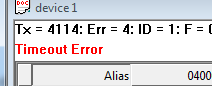
13.1. Modbus Exception Codes
Modbus exceptions are errors returned from the slave device.
| Code | Name | Meaning |
|---|---|---|
01 |
Illegal Function |
The function code received in the query is not an allowable action for the server (or slave). This may be because the function code is only applicable to newer devices, and was not implemented in the unit selected. It could also indicate that the server (or slave) is in the wrong state to process a request of this type, for example because it is not configured and is being asked to return register values. |
02 |
Illegal Data Address |
The data address received in the query is not an allowable address for the server. More specifically, the combination of reference number and transfer length is invalid. For a controller with 100 registers, the PDU addresses the first register as 0, and the last one as 99. If a request is submitted with a starting register address of 96 and a quantity of registers of 4, then this request will successfully operate (address-wise at least) on registers 96, 97, 98, 99. If a request is submitted with a starting register address of 96 and a quantity of registers of 5, then this request will fail with Exception Code 0x02 Illegal Data Address since it attempts to operate on registers 96, 97, 98, 99 and 100, and there is no register with address 100. |
03 |
Illegal Data Value |
A value contained in the query data field is not an allowable value for server (or slave). This indicates a fault in the structure of the remainder of a complex request, such as that the implied length is incorrect. It specifically does NOT mean that a data item submitted for storage in a register has a value outside the expectation of the application program, since the MODBUS protocol is unaware of the significance of any particular value of any particular register. |
04 |
Server Device Failure |
An unrecoverable error occurred while the server (or slave) was attempting to perform the requested action. |
05 |
Acknowledge |
Specialized use in conjunction with programming commands. |
06 |
Server Device Busy |
Specialized use in conjunction with programming commands. |
0A |
Gateway Path Unavailable |
Specialized use in conjunction with gateways, indicates that the gateway was unable to allocate an internal communication path from the input port to the output port for processing the request. Usually means that the gateway is misconfigured or overloaded. |
0B |
Gateway Target Device Failed to Respond |
Specialized use in conjunction with gateways, indicates that no response was obtained from the target device. Usually means that the device is not present on the network. |
13.2. Modbus Poll error messages
| Error message | Meaning |
|---|---|
Timeout Error |
The response is not received within the expected time. Check the following:
|
Response Error |
The response is not the expected one. Different slave ID. |
CRC Error |
The CRC value of the received response is not correct. |
Write Error |
This is an error reported by the serial driver. This could happen if a USB/RS232/485 converter is used and the USB cable is unplugged. There are 4 types:
Write error using TCP/IP connection is normally caused by lost connection. |
Read Error |
This is an error reported by the serial driver. There are 6 types:
Read error using TCP/IP connection is normally caused by lost connection. |
Insufficient bytes received |
The response is not the expected length. |
Byte count error |
The byte count in the response is not correct. Compared to the expected. |
Transaction ID error |
It is used for transaction pairing, the MODBUS server copies in the response the transaction identifier of the request. |